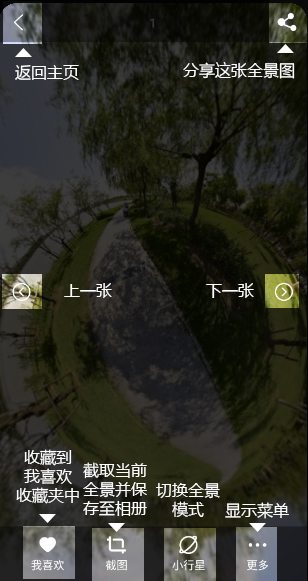
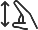
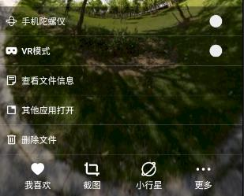
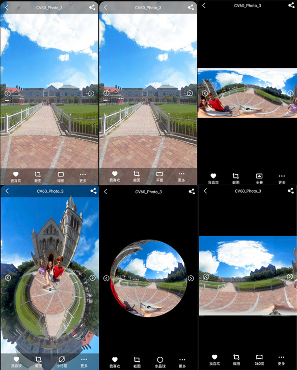
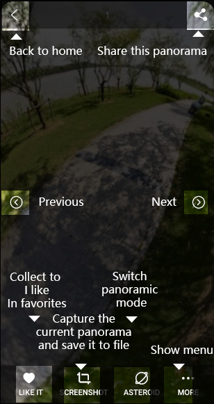
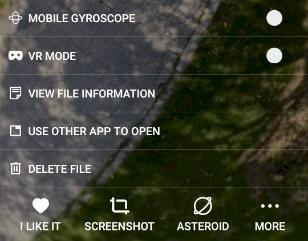

在主页或相册页面选择一张您的全景图，点击即可打开。
然后就进入了全景浏览界面，各个按钮的说明如下：

使用单指移动视图

使用双指缩放视图
双击屏幕重置视图
点击主菜单可以查看文件信息，以及开启陀螺仪或是VR模式。

你可以点击下方模式按钮切换全景投影显示模式，各个投影模式效果如下

返回
Select a panorama on the home page or album page and click to open it.
Then you enter the panoramic browsing interface. The description of each button is as follows:

Moving views with one finger
Zoom the view with two fingers
Double click the screen to reset the view
Click the main menu to view the file information and turn on the gyroscope or VR mode.

You can click the mode button below to switch the panoramic projection display mode. The effect of each projection mode is as follows
Back